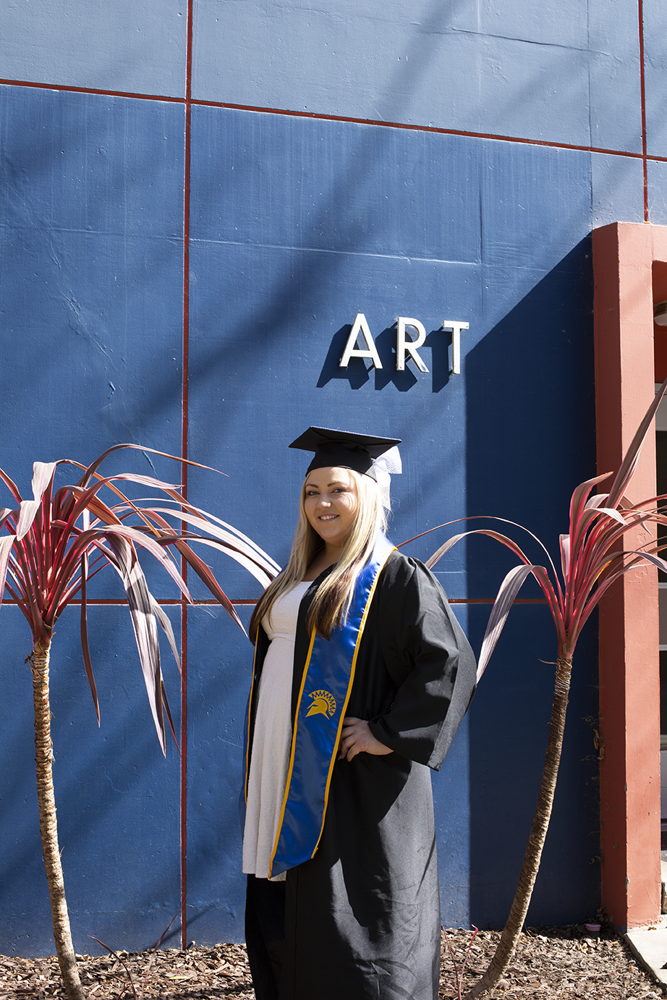
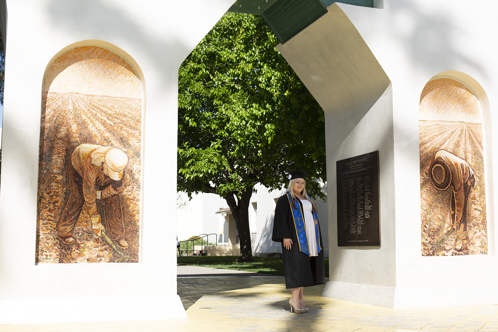

<DOCTYPE html>
    <html lang="en">
    <head>
        <meta charset="utf-8">
        <meta name="viewport" content="width=device-width, intial-scale=1">
    <title>Monica Tinoco</title>
    <link rel="stylesheet" type="text/css" href="style.css">
        </head>
        <body>
		<header>
			<div class ="wrapper2">
			<h1 align="center">Graduation Photographs</h1>
			</div>
        <div class= "logo">
        	<a href = "index.html"></a>
        		</div>
			</header>
		<nav>
		<ul class= "Nav">
       		<li><a href = "index.html">PORTFOLIO</a></li>
			<!--<li><a href = "design.html">DESIGN</a></li>-->
			<!--<li><a href = "photography.html">PHOTOGRAPHY</a></li>-->
			<!--<li><a href = "artiststatement.html">ARTIST STATEMENT</a></li>-->
			<li><a href = "about.html">ABOUT</a></li>
			<li><a href = "contact.html">CONTACT</a></li>
        </ul>
			</nav>
      <div class="row">
        <div class="column">
          
          
          
          
          
          
        </div>
      <div id="textbox12">The photographs were taken on location at the San Jose
        State University campus. Camera used was a Canon Mark ii with a 50mm fixed lens.</div>
      </div>
		</body>
    <br>
    <br>
    <br>
			<footer>
				<p2>&copy; Monica Tinoco 2020</p2>
				</footer>
		</html>
